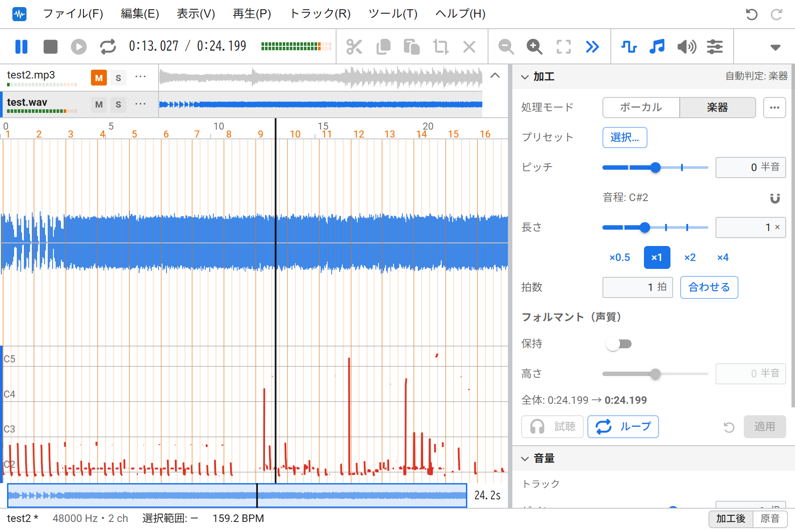
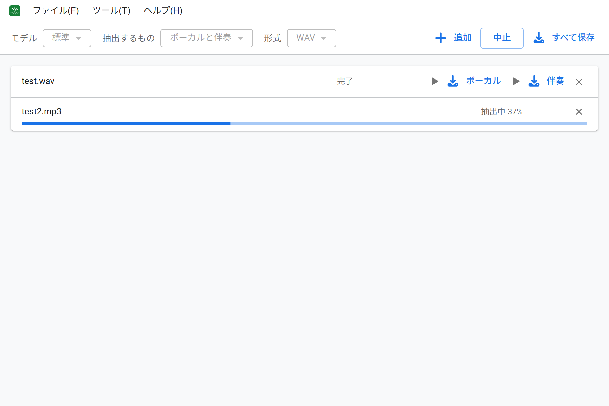
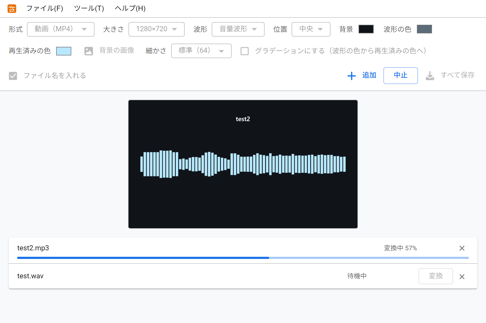
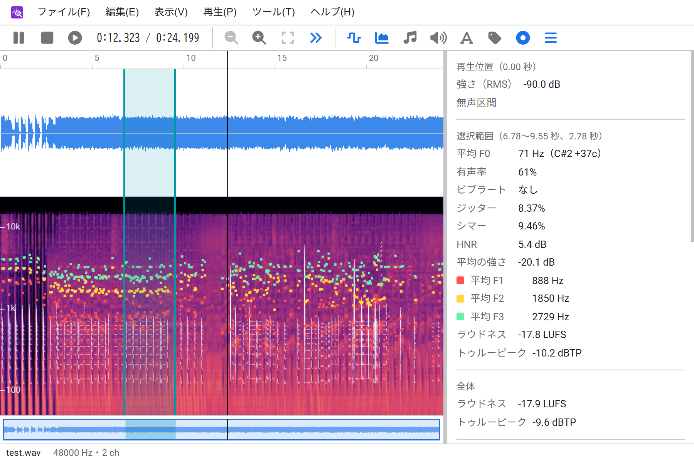
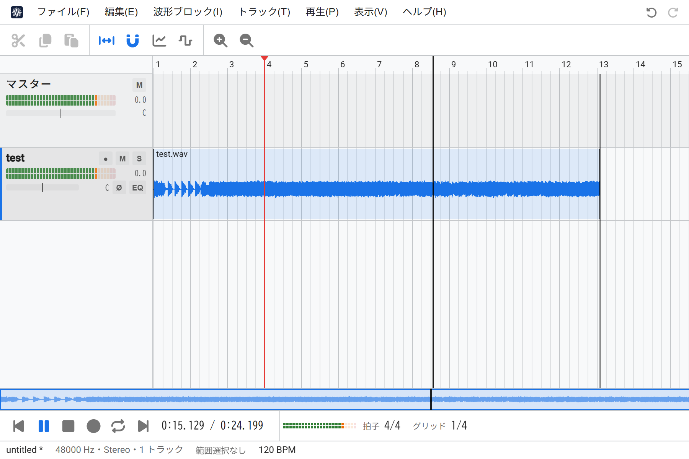

- WeVocal Series -
やぁやぁ(´・ω・`)
(・∀・) > もちろんキミたちもブラウザ上で音声ファイルをいじりたいやんな？
(・∀・) > うちがその夢かなえたるでぇ！ぜひ使ってや～！
おしらせ
とくになし
『WeVocalSynth』
パスタ、Web上で音声の音程や時間を編集する音声加工ツール
◯ アプリを開く | ウィキ

『WeVocalExtractor』
サラダ、Web上で曲からボーカルと伴奏を抽出する音源分離ツール
◯ アプリを開く | ウィキ (工事中)

『WeVocalConverter』
スープ、Web上での音声ファイル形式変換ツール
◯ アプリを開く | ウィキ (工事中)

『WeVocalAnalyzer』
前菜、Web上で音声を解析するための音源解析ツール
◯ アプリを開く | ウィキ (工事中)

『WeVocal Studio』
メイン、Web上で音声を波形ブロックとして操作する音声編集ツール (←DAWになりたいマン)
◯ アプリを開く | ウィキ (工事中)

調理人: 管理者のお部屋 (PITAN76.NET) - 2026